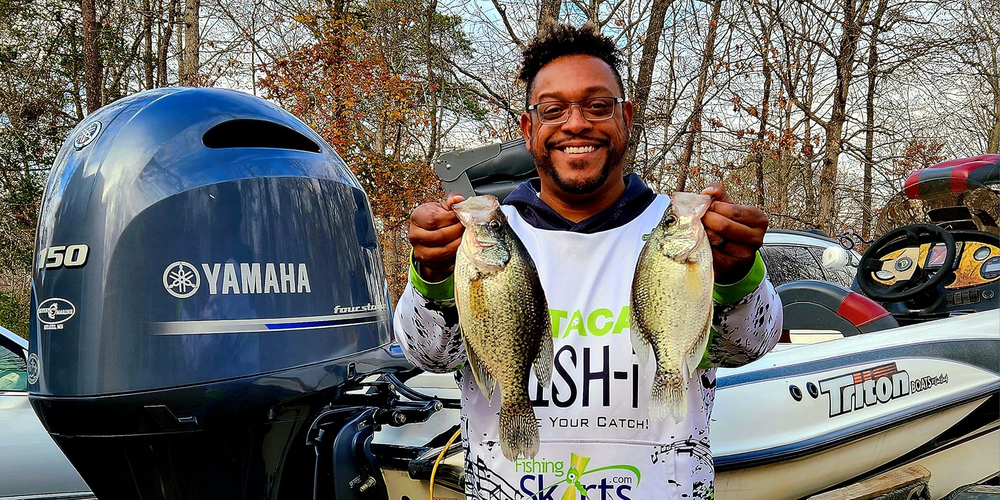
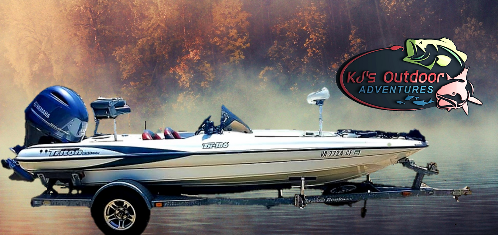

Join Captain KJ aboard the Triton TX-186 for an unforgettable guided fishing adventure. USCG Licensed & Insured. 35+ years experience. Bass, crappie, snakehead & more.

With over 35 years of fishing experience and an active career as a BASS and Major League Fishing (MLF) tournament angler, Captain Kris Johnson — "Captain KJ" — is one of the most accomplished fishing guides in Northern Virginia. His deep knowledge of the Potomac River, Lake Anna, Rappahannock River, and Chesapeake Bay means he consistently puts clients on fish, whether you're chasing trophy largemouth bass, limits of crappie, or explosive snakehead.
Aboard his 19-foot Triton TX-186, a high-performance tournament bass boat, you'll fish with the same professional-grade equipment and techniques that Captain KJ uses in competition. Every trip includes all rods, reels, tackle, lures, fresh and live bait, your Virginia fishing license, drinks, and digital photos of your catches. Captain KJ provides everything you need — just show up and fish.
Operating from King George, VA, Captain KJ launches from multiple locations across Northern Virginia to target the best fishing each season offers. From Leesylvania State Park on the upper Potomac to McGuires Wharf on the lower Potomac, from High Point Marina on Lake Anna to Yankee Point on the Rappahannock — Captain KJ knows exactly where the fish are and how to catch them.
Captain KJ fishes four distinct bodies of water across Virginia, each offering unique species and experiences. From trophy largemouth bass on the Potomac to limits of crappie on Lake Anna, from explosive snakehead strikes to inshore speckled trout on the Rappahannock — there's always something incredible biting.
Captain KJ's primary target and passion. As a tournament bass angler competing in BASS and MLF events, he brings 35+ years of elite-level bass fishing knowledge to every trip. Target them on the Potomac River and Lake Anna using crankbaits, jigs, spinnerbaits, and soft plastics. The Potomac River is consistently ranked as one of the top bass fisheries in the nation.
Target striped bass on the Potomac River near McGuires Wharf and Colonial Beach, and on Lake Anna. Captain KJ uses trolling, live bait, and jigging techniques to locate and catch these powerful gamefish. The Potomac's fall striper run is legendary, with fish pushing 30+ inches common from September through December.
The Potomac River has some of the best blue catfish fishing on the entire East Coast. These invasive giants can exceed 50+ pounds and provide incredible rod-bending action. Captain KJ targets blue cats with fresh cut bait in the deep channels and drop-offs of the Potomac, where trophy-sized fish are caught regularly.
Lake Anna is famous for its incredible crappie fishing, and Captain KJ delivers outstanding crappie trips with catches of 30 to 55 fish common on a single outing. Using light tackle, jigs, and minnows, Captain KJ knows the deep structure and brush piles where Lake Anna's crappie school up during the cooler months.
The Potomac River is ground zero for Northern Snakehead fishing in the United States. These aggressive, hard-fighting predators hit topwater lures with explosive, heart-stopping strikes. Captain KJ targets snakehead in the shallow backwaters and tributaries near Fairview Beach using frogs, buzzbaits, and chatterbaits.
The Rappahannock River near Yankee Point offers outstanding light tackle inshore action for speckled trout and redfish. These prized gamefish are targeted on shallow flats and along grass lines using soft plastics, topwater lures, and live bait. Fall is prime time when both species are actively feeding before winter.
White perch are abundant throughout the Potomac River and provide non-stop action on light tackle. These scrappy panfish are excellent eating and are perfect for families and beginner anglers. Captain KJ can put you on schools of perch that keep rods bent all day long — a great option when you want guaranteed action.
Saltwater bottom fishing from McGuires Wharf and Colonial Beach on the lower Potomac and Chesapeake Bay targets spot, croaker, and flounder. These trips offer relaxing, rod-in-hand fishing with excellent table fare. Spot and croaker are delicious pan-fried, and limits are common during the summer months.
The Potomac River is consistently ranked among the top bass fisheries in the United States, producing more tournament-winning bags than nearly any other river system on the East Coast. From its tidal freshwater reaches near Washington, DC to its saltwater transition zone near the Chesapeake Bay, the Potomac offers an extraordinary diversity of habitat and species that few waterways can match.
Lake Anna, Virginia's third-largest lake, is renowned for its outstanding crappie fishing from October through April. The lake's warm-water discharge from the nuclear power plant creates a unique warm-water refuge that concentrates fish and extends the productive fishing season. Captain KJ's intimate knowledge of Lake Anna's structure, brush piles, and seasonal patterns means he consistently puts clients on big numbers of quality crappie.
The Rappahannock River is an emerging inshore fishery that offers speckled trout and redfish action rivaling the more famous waters of the Chesapeake Bay proper. The river's extensive grass flats, oyster bars, and deep channels near Yankee Point create ideal habitat for these prized gamefish, especially during the fall months when both species are feeding aggressively.
Captain KJ's 35+ years of fishing experience, combined with his active tournament career in BASS and MLF competitions, means he stays on the cutting edge of techniques and patterns. When you fish with Captain KJ, you're not just hiring a guide — you're fishing with a true professional who competes at the highest levels of the sport.
Virginia offers incredible fishing opportunities year-round across multiple bodies of water. Here's what to expect each season.
Spring fires up the Potomac River as largemouth bass move shallow for the spawn. Crappie fishing finishes strong on Lake Anna through April. Blue catfish start their peak season. Snakehead begin hitting as water temps rise. Striped bass season opens on the Potomac with excellent action near McGuires Wharf.
Summer brings peak snakehead action on the Potomac with explosive topwater strikes. Bass fishing continues strong on both the Potomac and Lake Anna. Blue catfish hit their peak in the deep channels. Bottom fishing for spot and croaker lights up on the lower Potomac. Speckled trout start on the Rappahannock.
Fall is arguably the best overall season in Virginia. Speckled trout and redfish peak on the Rappahannock. Bass transition to fall patterns with aggressive feeding. Crappie start their incredible run on Lake Anna. The striped bass fall run ignites on the Potomac. Blue catfish remain strong. It's all happening.
Winter is trophy crappie season on Lake Anna, where Captain KJ's trips regularly produce 30-55 fish per outing. The warm-water discharge keeps crappie active and concentrated. Winter bass fishing offers the chance at true giants on both the Potomac and Lake Anna. Blue catfish continue to bite in the deep Potomac channels.
Year-Round Fishing Opportunities: Unlike many fishing destinations with a limited season, Captain KJ's multi-water approach means there is always excellent fishing available regardless of the month. He adjusts launch locations, target species, and techniques based on water temperature, seasonal migrations, and current conditions to ensure every trip is productive. Whether you're visiting King George in the heat of July or the chill of January, there are always fish to catch.
Booking Tip: Peak demand periods include spring bass season (March-May), summer snakehead trips (June-September), fall speckled trout/redfish (September-November), and winter crappie on Lake Anna (December-March). Saturdays book up fastest. We recommend booking 1-2 weeks in advance to secure your preferred date. Call (804) 761-3131 to check availability.
| Species | Jan | Feb | Mar | Apr | May | Jun | Jul | Aug | Sep | Oct | Nov | Dec |
|---|---|---|---|---|---|---|---|---|---|---|---|---|
| Largemouth Bass | ✓ | ✓ | ★ | ★ | ★ | ★ | ★ | ★ | ★ | ★ | ★ | ✓ |
| Striped Bass | — | — | — | — | ✓ | ✓ | ✓ | — | ★ | ★ | ★ | ★ |
| Blue Catfish | ✓ | ✓ | ✓ | ★ | ★ | ★ | ★ | ★ | ★ | ★ | ✓ | ✓ |
| Crappie | ★ | ★ | ★ | ✓ | — | — | — | — | — | ✓ | ★ | ★ |
| Snakehead | — | — | — | ✓ | ✓ | ★ | ★ | ★ | ★ | ✓ | — | — |
| Speckled Trout | — | — | — | — | ✓ | ✓ | ✓ | ✓ | ★ | ★ | ★ | — |
| Redfish | — | — | — | — | ✓ | ✓ | ✓ | ✓ | ★ | ★ | ★ | — |
| White Perch | ✓ | ✓ | ✓ | ✓ | ✓ | ✓ | ✓ | ✓ | ✓ | ✓ | ✓ | ✓ |
| Bottom Fish (Spot/Croaker) | — | — | — | — | ✓ | ★ | ★ | ★ | ★ | ✓ | — | — |
A 19-foot high-performance tournament bass boat built for serious fishing and equipped with the latest electronics.

The Triton TX-186 is the same caliber of boat that Captain KJ fishes from in BASS and MLF tournaments — a high-performance, purpose-built bass boat designed for speed, stability, and all-day fishing comfort. When you fish with Captain KJ, you're fishing from a true tournament platform with every advantage the pros use.
Equipped with the latest marine electronics including GPS and advanced fish finder technology, the Triton gives Captain KJ the ability to locate fish quickly and efficiently. The boat features professional tournament-grade rods and reels, live bait wells for fresh bait, comfortable seating for 2 anglers, multiple rod holders, and all required safety equipment.
All trips include equipment, bait, tackle, lures, fishing license, drinks & digital photos. Max 2 anglers per trip.
Note: ~18% refundable deposit required (refundable up to 7 days before trip). Prices vary by species and day of week. Saturday premium applies. All trips include everything — license, equipment, bait, drinks, digital photos. Children welcome.
See what our guests are reeling in on the Potomac River, Lake Anna & beyond.
Secure your date on the water. Captain KJ will confirm within 24 hours.
Every trip with Captain KJ is a full-service, all-inclusive experience. He handles everything so you can focus on what matters — catching fish and making memories on Virginia's best waters.
Fill out the form below and Captain KJ will confirm your trip.
Don't just take our word for it. Here's what our guests have to say about fishing with Captain KJ.
"Captain Kris delivered an exceptional crappie fishing experience on Lake Anna. Patient, knowledgeable, and incredibly attentive. My son and I landed over 30 nice-sized crappies!"
"Got us on fish almost immediately. Very knowledgeable on navigating the Potomac River. Top-notch electronics and first-class tackle. Will definitely book again!"
"55 fish in one trip! Captain KJ knows every spot on the river. His experience as a tournament angler really shows. Best guide service in Virginia."
Captain KJ provides all fishing equipment, bait, tackle, lures, your fishing license, drinks, and digital photos. Here's what you should bring for the best experience.
KJ's Outdoor Adventures is based in King George, VA — centrally located between Washington DC, Fredericksburg, and the Northern Neck. Multiple launch points across the region.
King George is Captain KJ's home base, perfectly positioned on the Potomac River between Fredericksburg and the Northern Neck. From here, Captain KJ can quickly access Fairview Beach for bass and snakehead fishing, and is centrally located to reach all launch points across the region.
Fredericksburg residents are just 20 minutes from Captain KJ's home base. It's the perfect morning trip — head out for a half-day bass or snakehead trip on the Potomac and be home by lunch. Fredericksburg is the largest city in the Captain KJ service area, with easy access via US-301 and I-95.
Stafford County anglers enjoy easy access to Captain KJ's guided fishing trips via US-1. Whether you're looking for a weekend bass fishing trip on the Potomac, a crappie adventure on Lake Anna, or a snakehead excursion, Stafford is just 25 minutes from the action.
Colonial Beach is both a nearby city and a launch point for Captain KJ's bottom fishing trips on the lower Potomac. This historic riverside town on the Northern Neck offers saltwater-influenced fishing for spot, croaker, and striped bass. It's one of Virginia's hidden gems for fishing.
Woodbridge is home to Leesylvania State Park, one of Captain KJ's primary launch points for Potomac River bass fishing. Northern Virginia anglers from Woodbridge, Dale City, and the Prince William County area enjoy easy access to world-class bass and snakehead fishing right in their backyard.
Montross is home to McGuires Wharf, one of Captain KJ's launch points for bottom fishing and striped bass on the lower Potomac. This Northern Neck location provides access to the saltwater transition zone where the Potomac meets the Chesapeake Bay, offering excellent spot, croaker, and rockfish action.
Washington DC anglers make the 90-minute drive south for some of the best freshwater and inshore fishing in the Mid-Atlantic. The Potomac River near Leesylvania State Park offers a completely different experience from the urban Potomac — world-class bass, snakehead, and catfish fishing in a scenic natural setting.
Alexandria residents are just an hour south of the Potomac's best fishing grounds. Captain KJ's trips from Leesylvania State Park in Woodbridge are the closest option for NoVA anglers looking for guided bass, snakehead, and catfish fishing on the tidal Potomac River.
Richmond anglers make the drive north for Potomac River bass and snakehead, or head west to Lake Anna for incredible crappie fishing. Captain KJ's Lake Anna trips launch from High Point Marina, which is also about 90 minutes from Richmond via I-64 and US-522.
Spotsylvania County residents are close to both King George and Lake Anna, making them ideally positioned for any of Captain KJ's trips. Whether it's bass on the Potomac, crappie on Lake Anna, or speckled trout on the Rappahannock, Spotsylvania anglers are 30 minutes from great fishing.
Unlike guides who operate from a single marina, Captain KJ uses multiple launch points across Northern Virginia to ensure you're fishing the best water for your target species and the current conditions. Leesylvania State Park in Woodbridge offers prime access to the upper tidal Potomac for bass. Hope Springs Marina and Fairview Beach provide quick runs to snakehead territory. McGuires Wharf in Montross and Colonial Beach access the lower Potomac's saltwater zone for stripers and bottom fish. High Point Marina on Lake Anna is crappie and bass headquarters. And Yankee Point on the Rappahannock puts you on speckled trout and redfish.
This multi-location approach is a major advantage. Captain KJ monitors conditions across all four bodies of water and selects the optimal launch point for your trip based on water temperature, wind, tide, recent fish reports, and seasonal patterns. You always fish the best water available.
Whether you're a local angler from Fredericksburg or Stafford looking for a weekend fishing trip, a DC-area resident wanting to escape the city for a day on the water, or a tourist visiting Virginia's historic battlefields and wineries, a guided fishing trip with Captain KJ is an unforgettable way to experience Virginia's natural beauty. Captain KJ welcomes anglers of all experience levels, from first-time fishermen to seasoned tournament competitors.
King George's central location between Washington DC, Richmond, and the Chesapeake Bay makes it an ideal base for Captain KJ's multi-water guide operation. No matter where you're coming from, world-class fishing is just a short drive away.
Everything you need to know about fishing with Captain KJ on Virginia's best waters.
Your Virginia fishing license is included with every guided trip — freshwater for Potomac River and Lake Anna trips, saltwater for lower Potomac and Bay trips. No need to purchase separately!
Have questions? Reach out anytime.